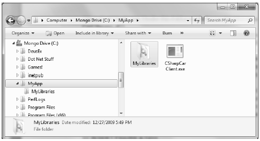
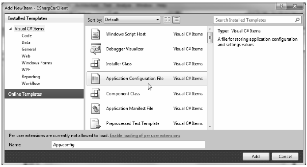
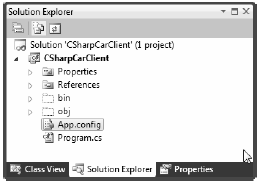
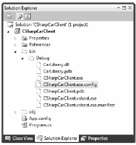

Technically speaking, the code libraries you’ve created thus far in this chapter have been deployed as private assemblies. Private assemblies must be located within the same directory as the client application that’s using them (the application directory) or a subdirectory thereof. Recall that when you set a reference to CarLibrary.dll while building the CSharpCarClient.exe and VisualBasicCarClient.exe applications, Visual Studio 2010 responded by placing a copy of CarLibrary.dll within the client’s application directory (at least, after the first compilation).
When a client program uses the types defined within this external assembly, the CLR simply loads the local copy of CarLibrary.dll. Because the .NET runtime does not consult the system registry when searching for referenced assemblies, you can relocate the CSharpCarClient.exe (or VisualBasicCarClient.exe) and CarLibrary.dll assemblies to a new location on your machine and run the application (this is often termed Xcopy deployment).
Uninstalling (or replicating) an application that makes exclusive use of private assemblies is a nobrainer: simply delete (or copy) the application folder. Unlike with COM applications, you do not need to worry about dozens of orphaned registry settings. More important, you do not need to worry that the removal of private assemblies will break any other applications on the machine.
The full identity of a private assembly consists of the friendly name and numerical version, both of which are recorded in the assembly manifest. The friendly name is simply the name of the module that contains the assembly’s manifest minus the file extension. For example, if you examine the manifest of the CarLibrary.dll assembly, you find the following:
.assembly CarLibrary
{
...
.ver 1:0:0:0
}
Given the isolated nature of a private assembly, it should make sense that the CLR does not bother to use the version number when resolving its location. The assumption is that private assemblies do not need to have any elaborate version checking, as the client application is the only entity that “knows” of its existence. because of this, it is (very) possible for a single machine to have multiple copies of the same private assembly in various application directories.
The .NET runtime resolves the location of a private assembly using a technique called probing, which is much less invasive than it sounds. Probing is the process of mapping an external assembly request to the location of the requested binary file. Strictly speaking, a request to load an assembly may be either implicit or explicit. An implicit load request occurs when the CLR consults the manifest in order to resolve the location of an assembly defined using the .assembly extern tokens:
// An implicit load request.
.assembly extern CarLibrary
{ ... }
An explicit load request occurs programmatically using the Load() or LoadFrom() method of the System.Reflection.Assembly class type, typically for the purposes of late binding and dynamic invocation of type members. You’ll examine these topics further in Chapter 15, but for now you can see an example of an explicit load request in the following code:
// An explicit load request based on a friendly name. Assembly asm = Assembly.Load("CarLibrary");
In either case, the CLR extracts the friendly name of the assembly and begins probing the client’s application directory for a file named CarLibrary.dll. If this file cannot be located, an attempt is made to locate an executable assembly based on the same friendly name (for example, CarLibrary.exe). If neither file can be located in the application directory, the runtime gives up and throws a FileNotFoundException exception at runtime.
Note Technically speaking, if a copy of the requested assembly cannot be found within the client’s application directory, the CLR will also attempt to locate a client subdirectory with the exact same name as the assembly’s friendly name (e.g., C:\MyClient\CarLibrary). If the requested assembly resides within this subdirectory, the CLR will load the assembly into memory.
While it is possible to deploy a .NET application by simply copying all required assemblies to a single folder on the user’s hard drive, you will most likely want to define a number of subdirectories to group related content. For example, assume you have an application directory named C:\MyApp that contains CSharpCarClient.exe. Under this folder might be a subfolder named MyLibraries that contains CarLibrary.dll.
Regardless of the intended relationship between these two directories, the CLR will not probe the MyLibraries subdirectory unless you supply a configuration file. Configuration files contain various XML elements that allow you to influence the probing process. Configuration files must have the same name as the launching application and take a *.config file extension, and they must be deployed in the client’s application directory. Thus, if you wish to create a configuration file for CSharpCarClient.exe, it must be named CSharpCarClient.exe.config, and be located (for this example) under the C:\MyApp directory.
To illustrate the process, create a new directory on your C: drive named MyApp using Windows Explorer. Next, copy CSharpCarClient.exe and CarLibrary.dll to this new folder, and run the program by double-clicking the executable. Your program should run successfully at this point. Next, create a new subdirectory under C:\MyApp named MyLibraries (see Figure 14-12), and move CarLibrary.dll to this location.
Figure 14-12 CarLibrary.dll now resides under the MyLibraries subdirectory
Try to run your client program again. Because the CLR could not locate an assembly named CarLibrary directly within the application directory, you are presented with a rather nasty unhandled FileNotFoundException exception.
To instruct the CLR to probe under the MyLibraries subdirectory, create a new configuration file named CSharpCarClient.exe.config using any text editor, and save the file in the folder containing the CSharpCarClient.exe application, which, in this example is C:\MyApp. Open this file and enter the following content exactly as shown (be aware that XML is case sensitive!):
<configuration>
<runtime>
<assemblyBinding xmlns="urn:schemas-microsoft-com:asm.v1">
<probing privatePath="MyLibraries"/>
</assemblyBinding>
</runtime>
</configuration>
.NET *.config files always open with a root element named <configuration>. The nested <runtime> element may specify an <assemblyBinding> element, which nests a further element named <probing>. The privatePath attribute is the key point in this example, as it is used to specify the subdirectories relative to the application directory where the CLR should probe.
Once you’ve finished creating CSharpCarClient.exe.config, run the client by double-clicking the executable in Windows Explorer. You should find that CSharpCarClient.exe executes without a hitch (if this is not the case, double-check your *.config file for typos).
Do note that the <probing> element does not specify which assembly is located under a given subdirectory. In other words, you cannot say, “CarLibrary is located under the MyLibraries subdirectory, but MathLibrary is located under the OtherStuff subdirectory.” The <probing> element simply instructs the CLR to investigate all specified subdirectories for the requested assembly until the first match is encountered.
Note Be very aware that the privatePath attribute cannot be used to specify an absolute (C:\SomeFolder\ SomeSubFolder) or relative (..\\SomeFolder\\AnotherFolder) path! If you wish to specify a directory outside the client’s application directory, you will need to use a completely different XML element named <codeBase> (more details on this element later in the chapter).
Multiple subdirectories can be assigned to the privatePath attribute using a semicolon-delimited list. You have no need to do so at this time, but here is an example that informs the CLR to consult the MyLibraries and MyLibraries\Tests client subdirectories:
<probing privatePath="MyLibraries;MyLibraries\Tests"/>
Next, for testing purposes, change the name of your configuration file (in one way or another) and attempt to run the program once again. The client application should now fail. Remember that *.config files must be prefixed with the same name as the related client application. By way of a final test, open your configuration file for editing and capitalize any of the XML elements. Once the file is saved, your client should fail to run once again (as XML is case sensitive).
Note Understand that the CLR will load the very first assembly it finds during the probing process. For example, if the C:\MyApp folder did contain a copy of CarLibrary.dll, it will be loaded into memory, while the copy under MyLibraries is effectively ignored.
While you are always able to create XML configuration files by hand using your text editor of choice, Visual Studio 2010 allows you create a configuration file during the development of the client program. To illustrate, load the CSharpCarClient solution into Visual Studio 2010 and insert a new Application Configuration File item using the Project > Add New Item menu selection (see Figure 14-13).
Figure 14-13 Inserting a new App.config file into a new Visual Studio 2010 project
Before you click the OK button, take note that the file is named App.config (don’t rename it!). If you look in the Solution Explorer window, you will find App.config has been inserted into your current project (Figure 14-14).
Figure 14-14 Edit the App.config file to store the necessary data for client applications.
At this point, you are free to enter the necessary XML elements for the client you happen to be creating. Now, here is the cool thing. Each time you compile your project, Visual Studio 2010 will automatically copy the data in App.config to the \bin\Debug directory using the proper naming convention (such as CSharpCarClient.exe.config). However, this behavior will happen only if your configuration file is indeed named App.config; see Figure 14-15.
Figure 14-15 The contents of App.config will be copied to a correctly named *.config in your output directory
Using this approach, all you need to do is maintain App.config, and Visual Studio 2010 will ensure your application directory contains the latest and greatest configuration data (even if you happen to rename your project).
Note Using App.config files within Visual Studio 2010 is always recommended. If you manually add a *config file to your bin\Debug folder via Windows Explorer, Visual Studio 2010 may delete or change your file at the next compilation!